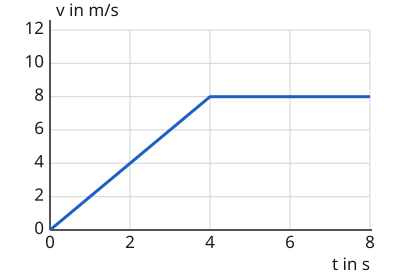

Das Geschwindigkeit-Zeit-Diagramm
Mit einem KI-Tutor lernen
Ein KI-Tutor erklärt dir diese Seite und hilft dir bei den Übungen. Wähl deinen Assistenten:
Mit Claude öffnen Mit ChatGPT öffnen Mit Mistral Vibe öffnen
Du nutzt dein eigenes Konto beim Anbieter. Der Assistent ist kein Angebot von lernapps.net: lernapps liefert nur Inhalte und Übungen. Die Wahl gilt für alle Seiten, nur auf diesem Gerät.
Der Tacho als Diagramm
Im Weg-Zeit-Diagramm musstest du aus der Steilheit auf die Geschwindigkeit schließen. Es geht auch direkter: Ein Geschwindigkeit-Zeit-Diagramm zeigt zu jeder Zeit, wie schnell der Wagen gerade ist, so als würdest du alle paar Sekunden auf den Tacho schauen und den Wert eintragen.
So liest du das Diagramm
- Geschwindigkeit-Zeit-Diagramm
Ein Diagramm, in dem waagerecht die Zeit und senkrecht die Geschwindigkeit steht. Jeder Punkt des Graphen sagt, wie schnell der Körper zu dieser Zeit ist.
Waagerecht steht wieder die Zeit in Sekunden, senkrecht aber die Geschwindigkeit in Metern pro Sekunde. Die Höhe des Graphen ist die Geschwindigkeit. Steigt die Linie, wird der Wagen schneller. Fällt sie, wird er langsamer. Verläuft sie waagerecht, ist er gleich schnell. Liegt sie auf 0, steht er.
Das Diagramm zeigt nur, wie schnell der Wagen ist, nicht in welche Richtung er fährt. Eine fallende Linie heißt also nicht, dass der Wagen rückwärts fährt, sondern nur, dass er langsamer wird.
Stelle die Geschwindigkeit ein
Die fünf Regler legen die Geschwindigkeit bei 0, 2, 4, 6 und 8 Sekunden fest. Dazwischen verbindet der Graph die Werte mit geraden Strichen. Die Zahlen an den Achsen bleiben gleich. Der Wagen oben auf der Bahn fährt so, wie es die Geschwindigkeit vorgibt. Mit „Start“ läuft die Zeit und der Wagen fährt, mit dem Regler „Zeit“ stellst du eine Zeit selbst ein, und „Zurücksetzen“ stellt auch alle Geschwindigkeiten wieder auf 4 m/s. Zu Beginn stehen alle Regler auf 4 m/s.
Probiere aus: Stelle die Regler auf 0, 3, 6, 9, 12 m/s. Wie sieht der Graph aus, und was macht der Wagen? Stelle sie dann auf 12, 9, 6, 3, 0 m/s. Was ist jetzt anders? Mit welcher Einstellung steht der Wagen die ganze Zeit?
Bei 0,0 s: Geschwindigkeit 4 m/s, Weg 0 m
Ein Geschwindigkeit-Zeit-Diagramm eines Wagens. Waagerecht die Zeit von 0 bis 8 s, senkrecht die Geschwindigkeit von 0 bis 12 m/s. Fünf Regler legen die Geschwindigkeit bei 0, 2, 4, 6 und 8 s fest, anfangs überall 4 m/s: Der Graph ist eine waagerechte Linie. Bei 0, 3, 6, 9, 12 m/s steigt die Linie, der Wagen wird schneller. Bei 12, 9, 6, 3, 0 m/s fällt die Linie, der Wagen wird langsamer. Bei 0 m/s überall liegt die Linie auf der Zeitachse, der Wagen steht.
Anfahren und gleichmäßig weiterfahren
Ein Fahrrad fährt an

Das Fahrrad fährt an und bleibt dann bei 8 m/s.
Quelle: eigene Zeichnung. Lizenz: CC-BY-4.0.Von 0 bis 4 s steigt die Linie: Das Fahrrad wird schneller, es beschleunigt. Von 4 bis 8 s ist sie waagerecht: Es fährt gleich schnell mit 8 m/s. Bei 2 s liest du 4 m/s ab, denn die Linie liegt dort halb so hoch wie bei 4 s.
Übung
Übung
Lösung
Richtige Antwort: 6 m/s
Bei 3 s verläuft die Linie waagerecht auf der Höhe 6. Der Wagen fährt dort gleich schnell mit 6 m/s.
Mehr dazu:
Übung
Lösung
Er wird langsamer und steht am Ende. richtige Antwort
Die Linie fällt von 6 m/s auf 0 m/s. Der Wagen wird immer langsamer, bei 8 s steht er.
Er fährt rückwärts zum Start.
Eine fallende Linie heißt nur, dass die Geschwindigkeit kleiner wird. Die Richtung zeigt dieses Diagramm nicht.
Er fährt gleich schnell weiter.
Gleich schnell wäre eine waagerechte Linie. Zwischen 4 s und 8 s fällt sie.
Er wird schneller.
Schneller werden zeigt eine steigende Linie. Hier fällt sie.
Die fallende Linie zeigt, dass die Geschwindigkeit abnimmt. Der Wagen bremst bis zum Stillstand ab.
Mehr dazu:
Übung
Lösung
Richtige Antwort: Die Linie steigt. – Der Wagen wird schneller.; Die Linie fällt. – Der Wagen wird langsamer.; Die Linie ist waagerecht, über null. – Der Wagen fährt gleich schnell.; Die Linie liegt auf null. – Der Wagen steht.
Die Höhe der Linie ist die Geschwindigkeit. Wie sie sich ändert, zeigt, ob der Wagen schneller oder langsamer wird.
Mehr dazu: